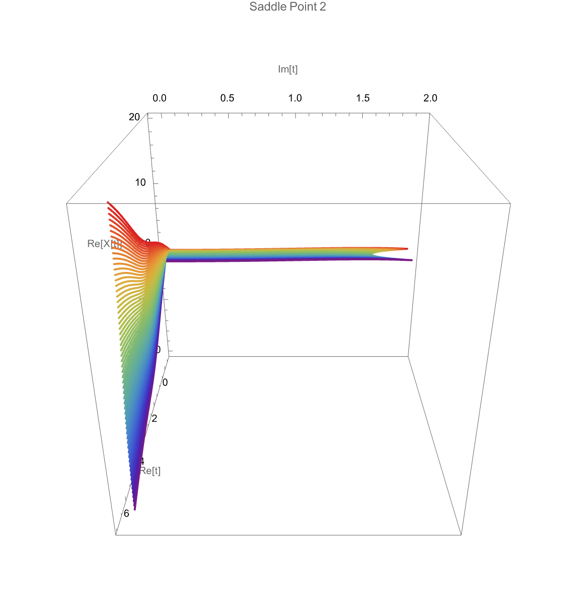
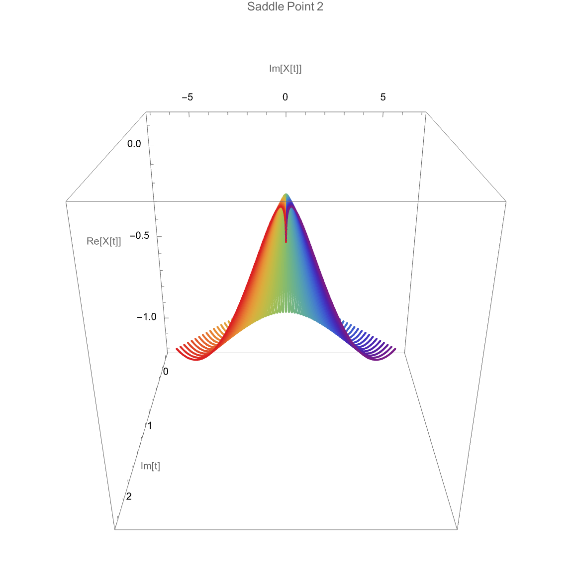
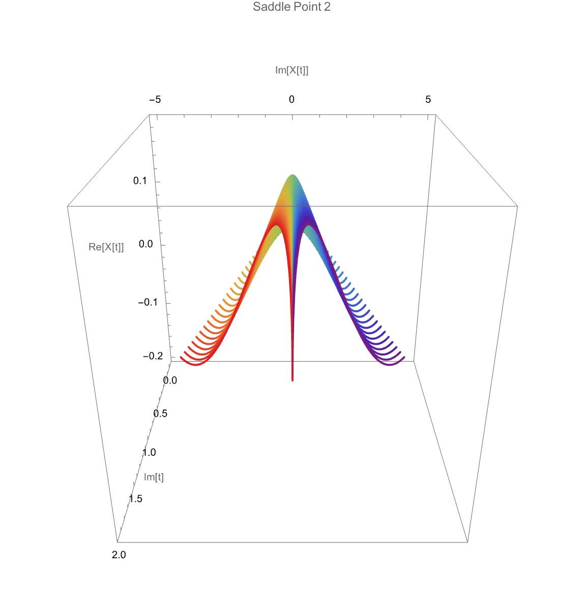
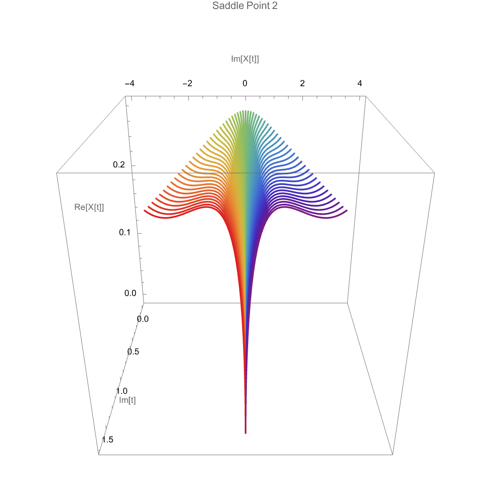
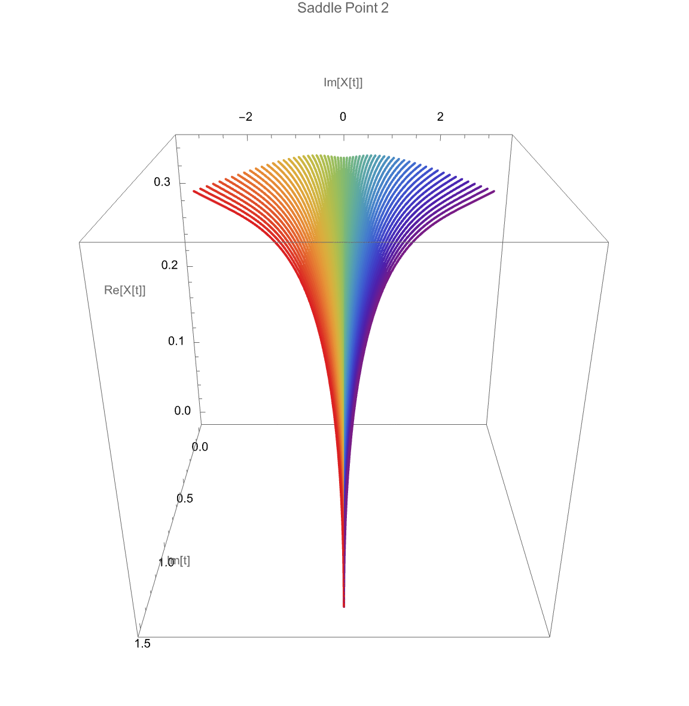
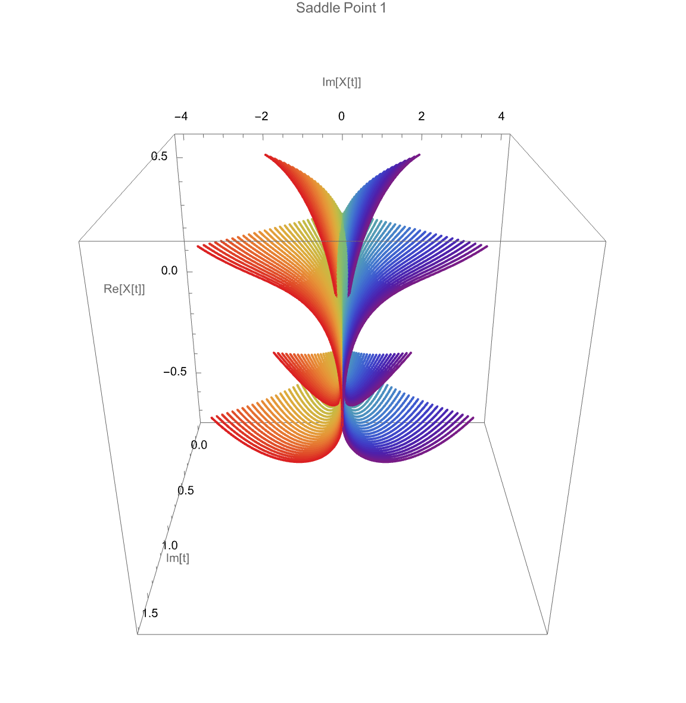

Electron's Dynamics Inside and Outside the Barrier

Trajectories Inside the Tunnel Barrier (Saddle Point 2, Mixing Angle: 15°)

Trajectories Inside the Tunnel Barrier (Saddle Point 2, Mixing Angle: 30°)

=Trajectories Inside the Tunnel Barrier (Saddle Point 2, Mixing Angle: 45°)

=Trajectories Inside the Tunnel Barrier (Saddle Point 2, Mixing Angle: 60°)

Trajectories Inside the Tunnel Barrier (All 4 Saddle Points, Mixing Angle:45°)
